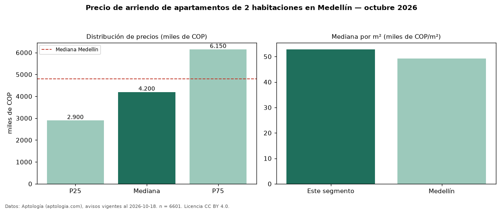

Precio de arriendo de apartamentos de 2 habitaciones en Medellín — octubre 2026
En Medellín, la mediana de canon mensual de apartamentos de 2 habitaciones es COP 4,20 millones, según 6.601 avisos vigentes. Eso es 12 % por debajo de la mediana de todos los apartamentos en arriendo de Medellín (COP 4,80 millones). Por metro cuadrado, la mediana es COP 52.857/m² al mes (n = 6464 avisos con área). Con el precio por m² de venta del mismo segmento (COP 8,51 millones/m²), la rentabilidad bruta implícita es 7,5 % anual (aproximación con medianas de ofertas distintas). El área mediana anunciada es 78 m². La administración mediana declarada es COP 530.000 al mes (n = 200), aparte del canon. La mitad central de los avisos va de COP 2,90 millones a COP 6,15 millones (razón 2,1), una dispersión alta. El estrato más frecuente es 6 (47 % de los avisos con estrato). Datos: Aptología (aptologia.com), CC BY 4.0 — https://www.aptologia.com/arriendo/medellin. Archivos: PDF, CSV con las cifras y gráfica PNG.

| Avisos únicos | 6601 |
|---|---|
| Percentil 25 | COP 2.900.000 |
| Mediana | COP 4.200.000 |
| Percentil 75 | COP 6.150.000 |
| Mediana por m² | COP 52.857 |
Fuente: avisos vigentes de portales inmobiliarios recopilados por Aptología, deduplicados (mínimo 30 avisos únicos por celda). Precios pedidos, no cerrados. Fecha: 2026-10-18.